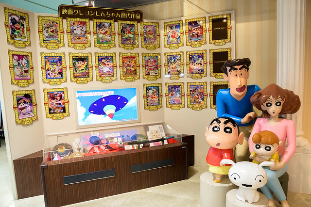

蠟筆小新館
About
距離東京市中心約1小時多車程的埼玉春日部市為蠟筆小新的背景，是其漫畫家臼井儀人的成長之地，而這裡也有個規模不算大的蠟筆小新館。 館內裡有不少小新、不理不理左衛門、野原一家的擺設，還有他們的拓印，小新迷可在這裡入手一些周邊商品。此外，這個小新館內有一些主題遊玩設施，可帶同小孩前來玩耍！
埼玉縣春日部市南1-1-1 LaLa garden春日部3F
10:00-20:00
1. 從新宿站搭乘JR的埼京線[快速](川越行) / 湘南新宿ライン[各停](宇都宮行) 到大宮駅，轉東武鐵路的東武野田線[各停](柏行)，到春日部駅下車
2. 從新宿站搭乘metro的丸ノ内線(池袋行)到大手町駅轉乘半蔵門線[急行](久喜行)，到春日部駅下車
購票
全年齡層
0日幣